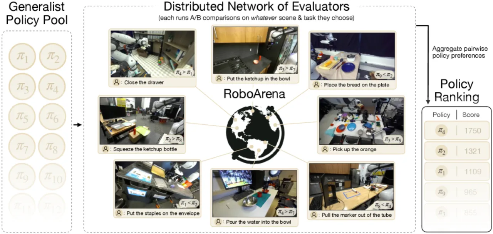
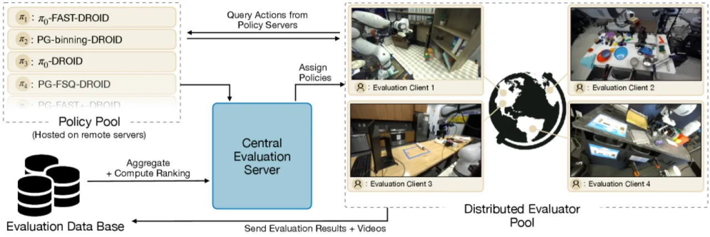
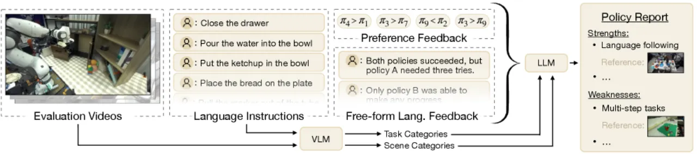
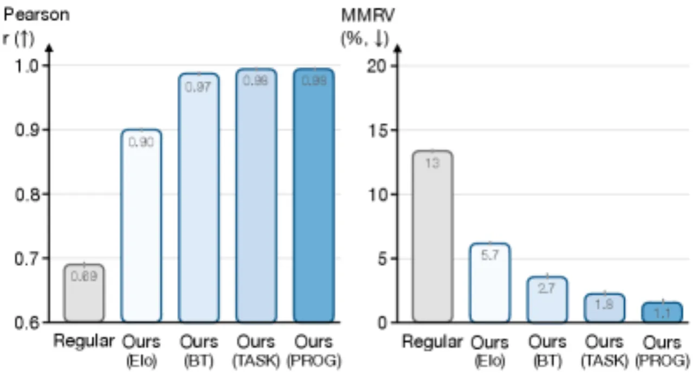
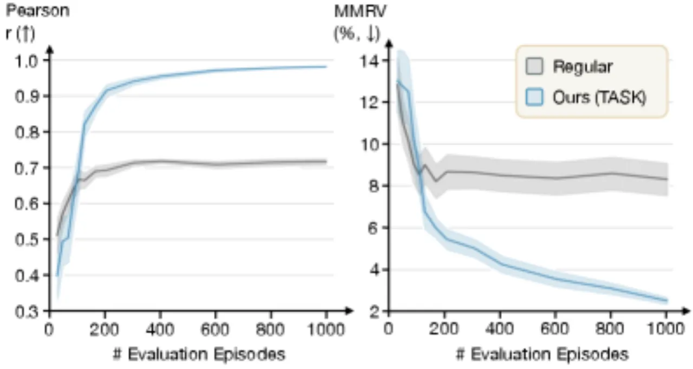

RoboArena 借鉴语言模型评测中的 Chatbot Arena 思路，通过分布式、双盲的成对策略比较，在真实机器人上对通用策略进行可扩展评估。跨越七个机构超过 600 次成对真实机器人评测，RoboArena 的排名结果比传统集中式评测方法更准确地反映策略的真实能力。
现有机器人评测范式要求对任务和环境进行严格标准化，难以全面衡量具备广泛能力的通用机器人策略。随着机器人策略越来越"通用"，标准化评测反而成为瓶颈——任务覆盖窄、场景固定、无法反映真实部署多样性。
"Tightly standardized sets of environments and tasks are not well-suited to provide comprehensive performance evaluations for policies designed for broad capability."

RoboArena 将评测分为三个核心模块：分布式评测协议（双盲成对实验）、任务感知排名算法（扩展 Bradley-Terry 模型）、定性分析流水线（VLM + LLM 自动生成策略特征报告）。

评测者在自选的场景和任务中对两个匿名策略（πA 和 πB）依次执行 rollout，双盲设计防止评测者对特定策略产生偏见。反馈包含三个维度：连续进度分、二元偏好以及自由文本说明，三种信号相互印证，提升排名可靠性。
标准 Bradley-Terry 模型仅建模策略绝对能力，忽略任务难度差异。RoboArena 引入三类参数：策略对数能力 θ、任务难度 τ、以及策略-任务偏置 ψ，将胜出概率建模为：
"p(πA > πB) = ∑t=1T νt · σ(θA + ψAt − τt) · (1 − σ(θB + ψBt − τt))"
参数通过近似最大似然期望最大化（approximate maximum likelihood expectation-maximization, EM）算法拟合，能够在样本稀疏时显著提升排名质量。

本次评测以 DROID 平台（Franka 机械臂 + Robotiq 夹爪 + 双目相机）为基础，评测七个通用策略变体，涵盖 π0-flow、π0-FAST、PG-flow、PG-FAST、PG-FAST+、PG-FSQ、PG-Bin，系统性覆盖了不同 action tokenization 和 flow matching 配置。
在七所机构收集共 4284 个 evaluation episodes，其中超过 600 个为成对双盲对比。将 Oracle 排名（由全量 episode 得出）作为参考标准，与传统集中式方法和多种排名算法对比。

| 排名方法 | 与 Oracle 相关性 | MMRV ↓ |
|---|---|---|
| 传统集中式评测（平均成功率） | 较低 | 较高 |
| Elo 在线更新 | 中等 | 中等 |
| Bradley-Terry（标准） | 中等 | 中等 |
| RoboArena（任务感知 BT） | 最高 | 最低 |

对 LLM 自动生成的策略报告进行人工校验：对于报告中声称"π0-FAST-DROID 优于、持平或劣于其他策略"的大多数类别，这些结论均与评测数据中的实际胜率一致，证明了定性分析流水线的可靠性。
实验对比了四种排名算法（Elo、标准 Bradley-Terry MLE、基于进度分的 PROG 排名、任务感知 Bradley-Terry），发现任务感知扩展在各指标上均优于其他变体；进度分排名（PROG）也有一定效果，但精细程度不及任务感知方法。
当前评测集中在 DROID 平台（Franka 机械臂），尚未覆盖跨体态通用策略。作者将跨平台扩展列为未来工作。
去中心化设计使"单变量对照实验"变得困难——不同机构使用不同场景和任务，无法像集中式评测那样精确控制实验条件。
作者坦言"尚未研究该系统对故意对抗性评测者的鲁棒性（have not investigated its robustness to intentionally adversarial evaluators）"，系统在恶意操纵下的表现有待进一步分析。
当评测指标本身成为优化目标时，它可能不再是真实能力的良好代理（"a measure ceases to be a good measure when it becomes a target"）。作者认为当前策略性能有限使得过度优化不太可能，但随着策略能力提升，这一风险会增大。